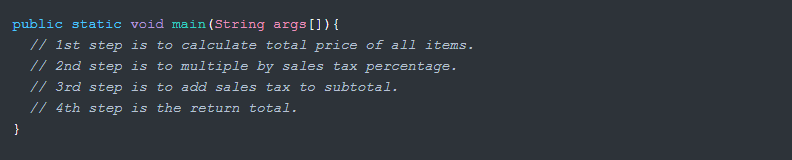
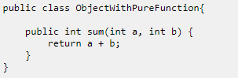
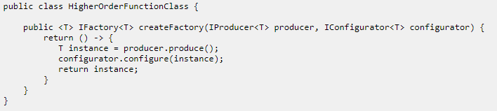
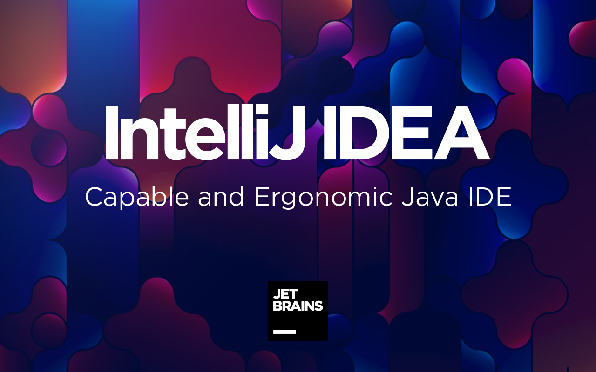
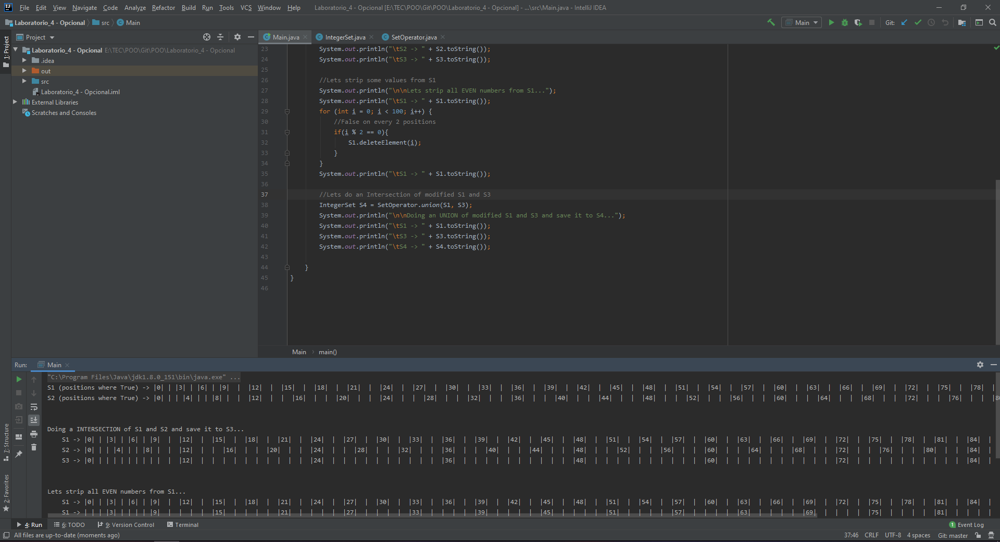

A bit of History
Did you know?: Java was originally called Oak, a symbol of strength, and the national tree of many countries like U.S.A., France, Germany and Romania.
Java had it's beginning thanks to James Gosling and colleagues at Sun Microsystems, in June 1991. With the promise of "Write Once, Run Anywhere", Java proposed the posibility to be run in multiple platforms, by compiling it to a bytecode, which is then run by a Java Virtual Machine.
There were five primary goals in the creation of the Java language:
- Use the Object-oriented programming methodology.
- Allow the same program to be executed on multiple operating systems.
- Contain built-in support for using computer networks.
- Designed to execute code from remote sources securely.
- Easy to use, by selecting what was considered the good parts of other object-oriented languages.
Programming Paradigms
For each programming language, we have a set of concepts, principles, and rules; which we refer to as a Programming paradigm. The Java programming language is based on four main paradigms: Imperative, object-oriented, declarative, and functional. Lets go through each of them and the major concepts that describe these paradigms.
Imperative Programming
In this paradigm, statements are written to change the state of the program. The program is a set of instructions that is run on the processing unit, and it changes the state. The name imperative implies the fact that the instructions dictate how the program operates. This essencially means that the code runs in an orderly manner, step by step, until there are no more lines to execute.
Object-Oriented Programming
Objects are the main elements of an object-oriented programming (OOP) language. An object holds both the state and the behavior. There are 4 fundamental principles(which we have already discussed heavily in class):
- Encapsulation
- Abstraction
- Inheritance
- Polymorphism
Functional Programming
In functional programming terminology, functions are similar to mathematical functions, which produces an output that typically depends only on its arguments. Each time a functional programming function is called with the same arguments, the same result is achieved. Functional programming contains the following key concepts:
- Functions as first class objects:
This means that you can create an "instance" of a function, and have a variable reference that function instance. Functions can also be passed as parameters to other functions.
- Pure functions:
- The execution of the function has no side effects.
- The return value of the function depends only on the input parameters passed to the function.
 - Higher order functions:
- The function takes one or more functions as parameters.
- The function returns another function as result.

Java Uses & Applications

Among the main uses for Java, we can list the following:
- Android Apps: Using Android Studio and Java SDK.
- Embedded Systems: Several devices, such as SIM cards, blue-ray disk players, utility meters and televisions, use embedded Java technologies.
- Web Applications: Servlets, Struts or JSPs.
- Enterprise Applications: Java Enterprise Edition (Java EE) is a popular platform that provides API and runtime environment for scripting and running enterprise software.
IntelliJ IDEA (JAVA IDE)

My personal recommendation would be IntelliJ IDEA. You can download and use the Community Edition for free. It's installation is fairly simple and straight-forward.

It's also fairly easy to use. At the left section, you will have your project folders and files. In the middle, the main editor allows you to open and modify the code. Finally, at the bottom, you will have your terminal, where your standard text outputs will show. You can run your program by clicking the green play button at the top right.